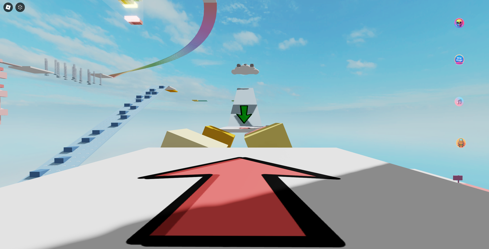
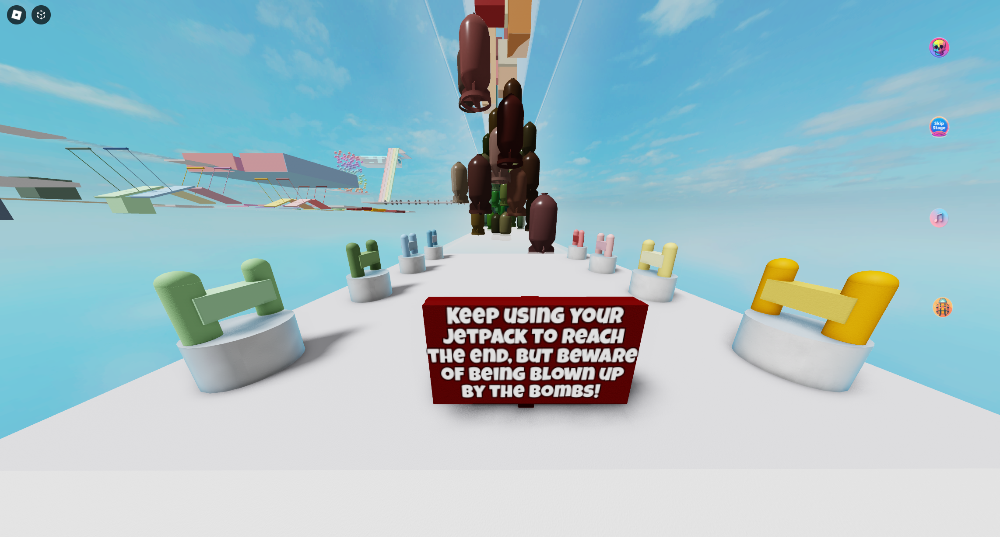

In February 2024, I released an obstacle course game (obby) called Chill But Not Too Chill Obby on Roblox. The Roblox platform allows game developers to publish their own games built with the Roblox game engine (think: Netflix for games). Because Roblox handles many of the minute details of multiplayer game development, it's a great platform to learn game development on. For new Roblox developers, creating an obby as a first game seems to be a rite of passage, and my journey was no different. What I thought would take only a week or two turned into a whole month-long adventure, with weekly updates from there on. My original draft was just a basic obby with routine obstacles. However, as I started working on the levels, I felt the urge to design unique and challenging obstacles. I wanted to create something I could be proud of, not just something that looked like the result of a homework exercise. Before diving into the game, I played more obbies on Roblox than I care to admit, trying to figure out what hooked players. I noticed a few things that these games had in common: an open-world environment, easy transitions from one level to the next, and simple object models. I decided to incorporate and expand upon these elements in my game to give players a sense of familiarity.
Sadly, after one month, my game had failed to attract a single player. I thought Roblox had an algorithm for game discovery, but that didn't seem to be the case. So, I spent $100 on advertising, which resulted in over 1,000 players the following day, with many more in the coming weeks. I immediately noticed one major issue when playing alongside these new players: the game’s difficulty was on Nightmare mode! One player even quipped that the game should be called Rage Quit Obby. There were a few levels where players were quitting immediately, with most leaving as early as level 3. Two of the most important factors to consider for your game are player retention and player engagement. Good engagement for obbies is typically around 10-20 minutes of session time. With players leaving at level 3, the average session time for my game was as low as 3 minutes! The problem with level 3 was that the obstacles transitioned from their starting position to their ending position way too quickly. This caused many players to get crushed by the obstacles, leading them to quit the game before respawning. To make the level easier, I adjusted the transition time between the start and end positions:
local collection_service = game:GetService("CollectionService")
local AIR_POSITION = 16
local GROUND_POSITION = 0
for _, part in collection_service:GetTagged("BlockPart") do
task.spawn(function()
local prismatic_constraint = part:WaitForChild("StartPosition"):WaitForChild("PrismaticConstraint")
local wait_time = math.random(300, 500) / 100
-- changed from (50, 150) to (100, 300) to (200, 300) to (300, 500)
while true do
task.wait(wait_time)
prismatic_constraint.TargetPosition = AIR_POSITION
task.wait(wait_time)
prismatic_constraint.TargetPosition = GROUND_POSITION
end
end)
end
While this did make the level easier, it didn’t make it any less of a slog. It wasn’t until much later, when I was modifying another level, that I realized the fix for level 3 was to make the blocks smaller so they could be jumped over. The key level design element I discovered here is that players should not have to wait for obstacles to progress through the level. With the obstacles now hurdleable, I was able to accelerate the transition from the start and end positions.
Level 13 was another challenging level for players. When I tested it myself, it was passable on the first try. However, it’s easy to detach yourself from the player perspective when you become the level designer, and that’s what happened here. Even though the level was quite easy for me, it certainly wasn’t easy for the Roblox players. The change here was to remove half of the fireballs from each truss and to slow down their angular velocity just a bit. Another lesson learned! Take what you think is easy and make it ten times easier.
Level 20 appears to be easy, but I found that players couldn’t time the jump between stars correctly. This level has been tweaked so many times that I think it’s just not suitable for multiplayer gameplay, where player or server lag can cause issues. Perhaps some single-player obstacles just don't translate well to multiplayer!
While these three levels gave players headaches and will probably need continuous tweaks until the balance is right, there were other levels that players seemed to enjoy or find challenging in a good way.
The jetpack levels were a massive hit with the players, who constantly asked for more of these levels (possibly within a new experience). For level 34, I used a Halton sequence to pseudo-randomize the location of the obstacles that needed to be avoided. The level ended up being a challenging one; however, players were happy to continue attempting it until they finally passed it.
Closing thoughts: This was my first game released on Roblox, and the first game I paid to advertise. Within a few advertising windows, I was able to draw in roughly 15,000 players. Unfortunately, after the advertising windows closed, none of these players stuck around. Analytics show that Day 1 Retention hovers around 5% and drops to 0.01% by Day 7. Average Session Time wavered around 5%, up from 3.5% at initial release, but not the massive increase I had hoped for. While I won’t stop developing the game, updates will continue to be sporadic. That said, I learned a lot during the development process, making the entire effort totally worthwhile:
- I did not have anyone playtest the game prior to advertising. This meant I discovered the game was too difficult during an advertising window with live players, which is not ideal. Going forward, I will playtest, even if it means making my friends sign up for a specific platform.
- I thought that creating unique and challenging obstacles would draw in new players and keep old players returning. This was not the case. In the end, my game was still an obstacle course with nothing noteworthy differentiating it from the competition.
- It’s better to spend more time on a game to ensure everything is feature complete, rather than releasing something sooner and iterating on it over time. This element differentiates the work of Technical Artists and Software Engineers, and it seems to apply to games as well. The one caveat may be when you need to be first to market to capitalize on something new to the platform you’re working on.
- The Roblox Developer Forum is a goldmine of information. I cannot overstate how awesome the developers on that forum are for assisting others and for writing amazing content.
Although I’m currently focusing solely on Fortnite Creative, I still have some ideas I want to bring to fruition on Roblox later this year. While things didn't go as planned with the release of this game, I learned so much and I'm excited to apply those lessons to future projects. Thanks for reading, and please reach out if you have any comments about this post. I always appreciate feedback and look forward to sharing more updates with you soon!